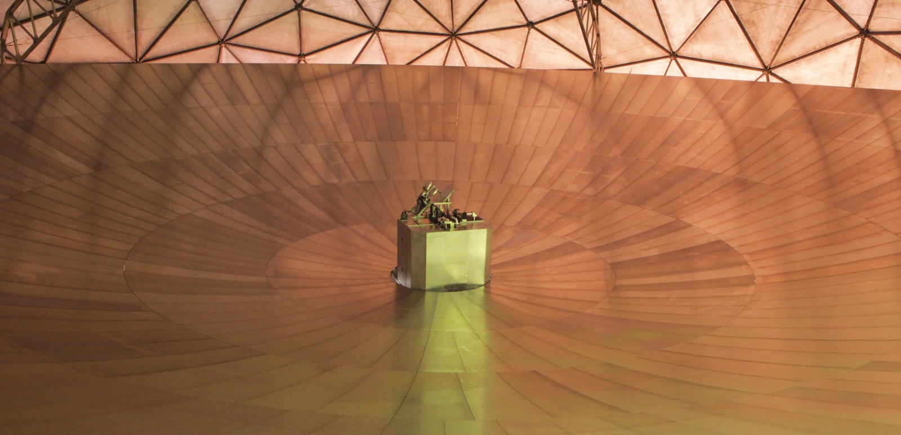
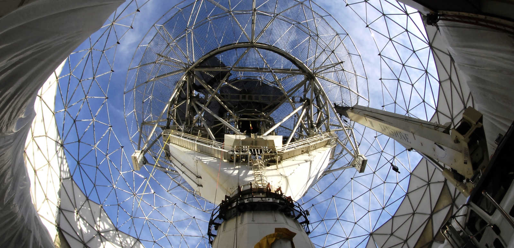

Space Systems and Technology
Ensuring critical U.S. space activities
We develop technology to meet the challenges of an increasingly congested and contested space domain. Our engineers design, prototype, operate, and assess systems that detect, track, identify, and characterize resident space objects. Given the potential for conventional conflict to extend to space, we conduct R&D on concepts and systems that will provide space mission resilience.
Space Systems and Technology
We research and develop technology for
advanced satellite systems that are used to monitor the activity of objects in space and
to perform remote sensing of Earth.
Latest News

September 9
Digital PET Laboratory
High-fidelity event data, modular systems, and open software give life science, medicine, pharmacy, and particle-detection research new technical leverage.

April 6
Digital PET Laboratory
all-digital PET imaging was appraised by an expert group led by Yu Mengsun, a Chinese academician of engineering, in Wuhan on April 5, and was considered to have reached the international...

November 27
Xinhuanet
team of 13 disciplines led by Professor Xie Qingguo of the School of Life of Huazhong University of Science and Technology has overcome the technical difficulties of high-end medical inst...
Advancing Our Research
Events
Featured Publications
Satellite remote sensing in disaster relief: FY23 HADR Technical Investment Program(9.12 MB)
Jun 13
Digital PET Laboratory Report
MIT-LIN-TIP-197
The need for spectrum and the impact on weather observations
Jul 1
Bull. Am. Meteorol. Soc., Vol. 102, No. 7,
July 2021, E1402-7.
What could we do with a 20-meter tower on the Lunar South Pole? Applications of the Multifunctional Expandable Lunar Lite & Tall Tower (MELLTT)
Nov 16
ASCEND, virtual event, 16-18 November
2020.
Our Staff
View the biographies of members of the Space Systems and
Technology research area.
Career Opportunities
Discover the exciting and challenging opportunities in Space Systems and Technology.